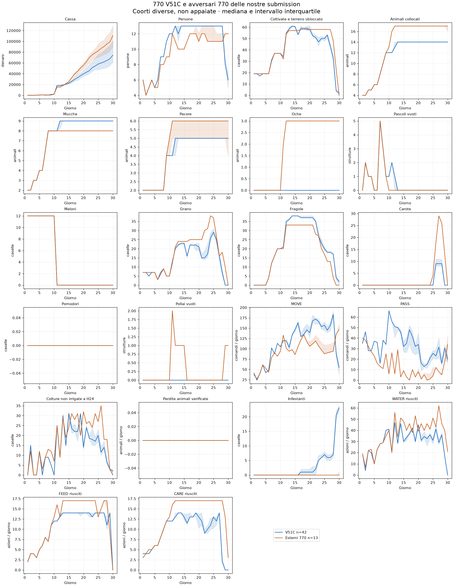

Base di riavvio: CODEX 770 V51C, submission 56124996. Bundle recuperato dal commit 977d5e064f2ef9808b4cd03d41c1276ba94348af, SHA256 43d5c6c3b70cf2940afaa83f3a243cba75e52f89db459d31ecb96187c4f13fda. Copia identica in submission/submission_codex_e19_770_v51_candidate.py; provenienza completa in BASELINE.json.
V49F corregge l'assunzione improduttiva D2; V51C impegna percorsi completi e adegua le assunzioni residue a D29. Sviluppo: 6 casi, +345 cassa media contro V49F; validazione: 4 casi su due seed, +64,50, servizi invariati. Un seed peggiora: non è superiorità uniforme. V50 respinta. V48 submission 56101593 resta controllo storico. La scelta recupera miglioramenti verificati, non deriva dal confronto fra rating di coorti diverse.
Esaminati 182 replay unici completi già scaricati con un nostro lato identificato, in questo checkout e nel worktree V51. Esclusi tecnici: 0. Non è il censimento di tutte le partite di tutte le submission; nessuna nuova partita o simulazione. Deduplicazione per EpisodeId. I replay di leader contro altri leader sono esclusi dal presente screening.
13 replay di 13 nomi avversari mantengono 7-7-0-0 a tutti i checkpoint D15–D25. 15 terminano 770; 2 sono 770 soltanto secondo il criterio finale. Il nome del team non identifica necessariamente una policy unica: submission distinte restano distinte quando i metadati sono disponibili. Non sono automaticamente agenti top o adattativi.
| Avversario | Episodio | 770 D15–25 | 770 D30 | Diretto V51C |
|---|---|---|---|---|
| Farmers Is All You Need | 107083439 | sì | sì | no |
| MJVinay | 107923552 | sì | sì | no |
| Malte Bories | 106073291 | sì | sì | no |
| Moomin and his farm | 107159481 | no | sì | sì |
| Nine1Eight | 107467627 | no | sì | no |
| Sergei Fironov | 108091470 | sì | sì | no |
| Shoma Arakawa | 108128439 | sì | sì | no |
| Siva Kumar | 107767227 | sì | sì | no |
| Tanuki_boosting | 107341826 | sì | sì | no |
| Yam | 107410838 | sì | sì | no |
| chudddc | 107150692 | sì | sì | no |
| saeNeko | 108019744 | sì | sì | no |
| stargazer7c | 107169059 | sì | sì | no |
| yuto083 | 107396212 | sì | sì | no |
| ömer kiraz | 107382620 | sì | sì | no |
Nei 42 replay V51C recuperati non ci sono avversari che soddisfano il criterio 770 produttiva D15–D25. Moomin and his farm (107159481) soddisfa soltanto il criterio finale: resta nel catalogo, escluso dal confronto delle 770 produttive. Gli scontri diretti V51C–770 stabile richiedono quindi ulteriori replay.
Le topologie giornaliere D1–D30 e gli hash raw sono in SCREEN.json; il catalogo selezionato è CANDIDATES.json. I confronti di leader precedenti sono già disponibili nel worktree V51, cartella reports/top_v51_20260909, e restano distinti dagli avversari delle nostre submission.
Confronto disponibile: 42 replay V51C già auditati contro 13 profili avversari 770 produttivi, auditati in questa analisi. Errori: 0, conservati in TRAJECTORY_ERRORS.json. Sono coorti diverse: il grafico non misura superiorità a mercato o avversario invariati. Tutti i profili selezionati sono inclusi senza filtro economico.

Dati individuali D1–D30: TRAJECTORIES.csv e TRAJECTORIES.json. Il corpus V51C proviene dal report top_v51_20260909 nel worktree recuperato; i profili originali conservano hash e riconciliazione.
| KPI medio giornaliero D16–D25 | V51C | Esterni 770 |
|---|---|---|
| people | 13.00 | 11.96 |
| MOVE | 154.18 | 118.58 |
| PASS | 27.08 | 6.91 |
| WATER | 35.06 | 44.38 |
| FEED | 13.71 | 15.92 |
| CARE | 11.61 | 16.39 |
| crop_tiles | 54.15 | 56.76 |
| occupied_livestock_tiles | 14.00 | 16.46 |
| GOOSE | 0.00 | 2.54 |
770 conta i pascoli, non tutti gli animali. Nel grafico gli esterni hanno mediana di 3 oche durante la fase produttiva, mentre V51C ne ha zero: i pollai non cambiano la classificazione 770. Non interpretare FEED/CARE maggiori come maggiore copertura a parità di animali. I singoli mix sono nel CSV.
Nel corpus originale V51C resta documentata la discrepanza contabile di 1 sul lato avversario Scorpi, episodio 107183104; il lato V51C qui usato è riconciliato. Quel lato avversario non appartiene ai 13 profili selezionati.
L’oca occupa un tile COOP. Nel replay107083439 a D16: 14 pascoli e4 pollai (uno vuoto), 17 animali su18 caselle di strutture. Analisi del calendario comune, delle visite locali e delle diagnosi precedenti.